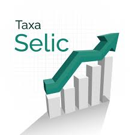
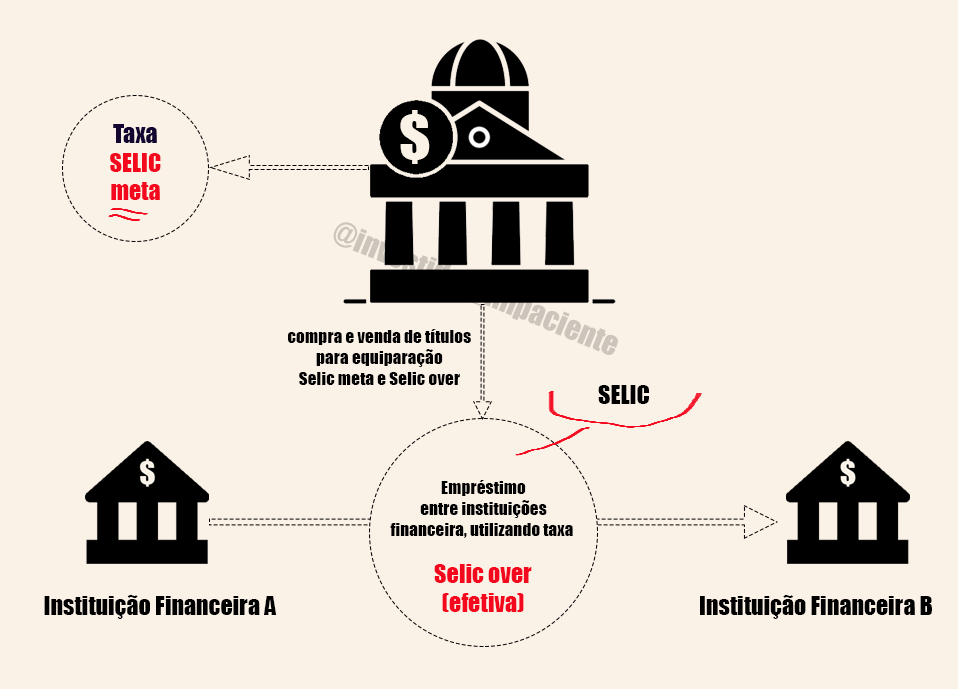
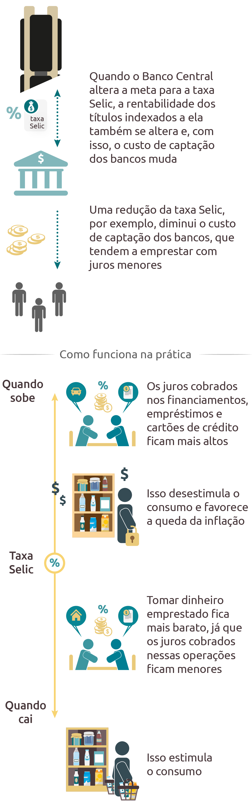

A TAXA SELIC
1. O que é?

A Taxa SELIC(Sistema Especial de Liquidação e de Custódia) é uma porcentagem na qual todas as
outras taxas de juros do mercado financeiro brasileiro se baseiam, ou seja, com base nela é que são
definidas da taxa de juros de um empréstimo ou de um financiamento, até o rendimento de um investimento e
da poupança. No entanto, é importante notar que existem duas taxas SELIC:
→A SELIC Meta, que é modificada a cada 45 dias (8x/ano), e é o valor usado nas
aplicações acima;
→A SELIC Over, que é cerca de 90% do valor da SELIC Meta, mas varia diariamente,
e é usada em movimentações entre instituições financeiras.
1.1 SELIC Over
Para controlar a quantidade de dinheiro em circulação e diminuir a inflação, o Governo exige que as
instituições financeiras depositem no Banco Central, ao final de cada dia, uma certa fração do dinheiro
total aplicado pela instituição. Devido ao volume absurdo de movimentações financeiras feitas pelas
instituições, não é incomum estas terminarem o dia com um valor maior ou menor do que o Banco Central
calculou como exigido.
Quando isso acontece, uma instituição pode adquirir um empréstimo com outra, usando uma taxa de
juros baseada na SELIC Over, para cumprir a lei. Esses empréstimos têm duração extremamente curta
(por volta de 24 horas) e a garantia das instituições são títulos públicos do Banco Central.

1.2 SELIC Meta
É a porcentagem que o Banco Central deseja que a SELIC Over alcance. É com base nesta que as
instituições financeiras definem as taxas de juros de empréstimos e financiamentos, o rendimento de alguns
investimentos e também o rendimento da poupança. É modificada a cada 45 dias pelo Comitê de Política
Monetária do Banco Central (COPOM).
Essa variação está de acordo com a necessidade monetária do Governo e com o controle da inflação,
isto é, a SELIC Meta sobe ou desce devido a dois fatores principais:
→o Governo precisa de dinheiro, então aumenta a SELIC Meta para que a população invista
no Tesouro SELIC e outros títulos públicos, utiliza o valor adquirido em um investimento e retorna o lucro
para a população pagando a SELIC Meta sobre o valor emprestado;
→ou a inflação está extrema, então o Governo altera a SELIC Meta para estimular ou
desestimular o uso de crédito e a realização de empréstimos e reerguer o comércio;

2. Impacto
2.1 Na inflação
→Os preços dos produtos estão muito altos devido à inflação;
→O COPOM aumenta a SELIC Meta para desestimular a população a usar o cartão de crédito, fazer empréstimos e financiamentos, pois estes terão taxa de juros mais altas;
→Os comércios são obrigados a baixar os preços para não falir, já que poucas pessoas têm poder aquisitivo para comprar itens não necessários (diminuição da inflação);
→Os preços dos produtos estão tão baixos que são comprados em massa mas geram pouco lucro para os comércios, que passam a ter problemas de estoque e na fabricação;
→O COPOM diminui a SELIC Meta para estimular tanto comércios quanto a população à realizar empréstimos e fazer uso do cartão de crédito;
→Com a nova demanda de uma população com maior poder aquisitivo mas pouca oferta devido à falta de estoque dos comércios, a inflação volta a subir;
2.2 Nos títulos públicos
Os títulos públicos podem ser divididos em três tipos: Pós-Fixado (Tesouro SELIC); Pré-Fixado
(Tesouro Prefixado); e Atrelado à Inflação (Tesouro IPCA+).
→O Tesouro Selic é o título que é impactado diretamente pelas variações da Taxa Selic. As
mudanças no indicador interferem na correção do valor a ser recebido na data de vencimento do título.
Quando maior a Taxa Selic, maior o rendimento do título e vice-versa.
→O Tesouro Prefixado só sofre impacto da Selic caso o investidor decida vender seus
títulos antes da data de vencimento. Digamos que você queira vender antes do vencimento esse mesmo título
prefixado que está pagando 14%. Se na hora da venda a Taxa Selic estiver abaixo do valor que estava quando
o título foi comprado, dizemos que o seu título se valorizou. Isso significa que as pessoas estarão mais
dispostas a pagar um valor maior por esse título no mercado secundário, já que ele estará com uma
rentabilidade maior quando comparado à Taxa Selic. O mesmo vale para o caso de a taxa básica de juros
aumentar na hora da venda do título. Nesse caso, o título terá se desvalorizado em comparação a Taxa Selic
no momento da compra, diferença que o mercado chama de deságio.
→No Tesouro IPCA+ a ideia é a mesma, já que ele possui uma parte prefixada e sofre com o
sobe e desce da inflação.
2.3 Na poupança
O impacto do indicador pode ser entendido em duas situações:
→Se a Taxa Selic for maior que 8,5% ao ano, o rendimento da Caderneta de Poupança será de
0,5% ao mês + a Taxa Referencial (TR)
→Se a Taxa Selic for igual ou menor que 8,5% ao ano, o rendimento da Caderneta de
Poupança será de 70% da Taxa Selic vigente no período + a TR.
Note que a TR é uma taxa de juros calculada diariamente e mensalmente pelo Banco Central. Quando o
investimento tem duração inferior a um mês, é usada a TR do dia, se não, a última TR mensal.
3. Simuladores
Correção de valor de acordo com a SELIC: Banco Central / Calculadora do Cidadão
Simular investimentos do Tesouro Direto: SIMULADOR
Rendimento da Poupança: Banco Central / Calculadora do Cidadão